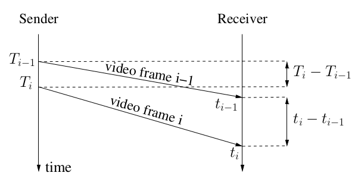

Google拥塞控制算法--TrendingLine滤波器
延迟梯度
 左边的Tx表示发送时间，右边的tx表示接收时间。
延迟梯度的计算公式就是： gt(i) = (t(i) - t(i-1)) - (T(i) - T(i-1))，实际上就是发送间隔和接收间隔的差值。
网络状态良好的情况下，这个值为0，当网络状态变差(发送端速度不变，接收端速度下降)，这个值为正。
举个例子：发送端以1mbps的速度发送(每1ms发送1kb数据)，接收端的带宽仅有0.5mbsp，如下图:
 从第一个1kb到第二个1kb，发送端用时1ms，而接收端需要2ms，梯度= 2 -1 = 1ms。观测”延迟梯度”的值，就可以发现发送端和接收端的带宽不对等，需要改变一方的速度。
从第一个1kb到第二个1kb，发送端用时1ms，而接收端需要2ms，梯度= 2 -1 = 1ms。观测”延迟梯度”的值，就可以发现发送端和接收端的带宽不对等，需要改变一方的速度。
考虑下面这一种情况：

发送端与交换机之间的带宽是30mbps，接收端与交换机之间的带宽是10mbps。当发送端以10mbps的速度发送数据时，不考虑其它因素的影响，假设传播时延是10ms，那么任何数据包在10ms内就可以均匀到达接收端。
当发送端以大于10mbps的速度发送数据时，由于接收端的网络设备的处理能力只有10mbps，会将无法及时转发的流量缓冲在出口队列中。
模拟这下这种情况：发送端以10mbps的速度发送数据，维持100ms，提高速度到16mbps，维持150ms，下降速度到8mbps，并一直保持这个速度。假设发送端发送的单个报文长度为10k bit。
前100ms内，接收端的带宽足够，不会有交换机缓冲。接下来的150ms，发送端速度大于接收端的带宽，有一半数据会被缓冲在交换机的队列中，队列长度不断增大，直至丢包。随后发送端速度下降到5mbps，队列中的数据又被不断抽出，直至恢复正常。
用以下代码对上述情况进行简单的模拟:
发送端
std::vector<Packet> BitSender::send(common::Timestamp at_time)
{
using namespace common::rate;
using namespace common::time_interval;
//初始化
if(!last_sent_time_.is_valid()){
last_sent_time_ = at_time;
}
size_t bits_will_send = 0;
std::vector<Packet> packets;
bits_will_send = static_cast<size_t>(bps_.value() *
((at_time - last_sent_time_) / 1_sec));
bits_sent_ += bits_will_send;
size_t bits_reamin = bits_will_send;
//向上取整
long n = std::lround(bits_reamin * 1.0 / kPacketSize);
for(int i = 0 ; i < n ; i++)
{
Packet packet;
packet.size = kPacketSize;
packet.send_time = at_time;
packets.push_back(packet);
}
last_sent_time_ = at_time;
return packets;
}
转发端
//接受发送端的数据，放到队列中
void BitForwarder::recive(std::vector<Packet>& packets)
{
for(auto& packet : packets)
{
packet.delay = packet.delay + 5_ms; //发送端->转发端 传输时延
fifo_.push(packet);
}
}
//发送队列中的数据
std::vector<Packet> BitForwarder::forward(common::Timestamp at_time)
{
size_t bits_will_forward = 0;
if(!last_forwarded_time_.is_valid()){
last_forwarded_time_ = at_time;
}
std::vector<Packet> forward_packets;
bits_will_forward = static_cast<size_t>(bps_.value() *
((at_time - last_forwarded_time_) / 1_sec));
bits_forwarded_ += bits_will_forward;
size_t bits_remain = bits_will_forward;
while(bits_remain && fifo_.size()){
if(fifo_.front().size <= bits_remain){
forward_packets.push_back(fifo_.front());
bits_remain -= fifo_.front().size;
fifo_.pop();
}else{
break;
}
}
last_forwarded_time_ = at_time;
return forward_packets;
}
接收端
void BitReciver::recive(std::vector<Packet>& packets,
common::Timestamp at_time)
{
for(auto& packet : packets){
packet.delay = packet.delay + 5_ms; //转发端->接收端 传输时延
packet.recive_time = at_time;
}
record(packets); //对每个包的发送、接收时间进行记录
}
主函数
int main()
{
BitSender sender(0_mbps);
BitReciver reciver(10_mbps);
BitForwarder forwarder(reciver.bps());
const auto start_time = common::Timestamp::now();
const auto kFirstStageEndTime = start_time + 100_ms;
const auto kSecondStageEndTime = start_time + 150_ms;
const auto kThirdStageEndTime = start_time + 300_ms;
const auto kFirstStageBps = 10_mbps;
const auto kSecondStageBps = 16_mbps;
const auto kThirdStageBps = 8_mbps;
//粒度是5ms
auto cur_time = start_time;
sender.set_bps(kFirstStageBps);
while(cur_time < kFirstStageEndTime){
auto packets = sender.send(cur_time);
forwarder.recive(packets);
auto packets_f = forwarder.forward(cur_time);
reciver.recive(packets_f, cur_time);
cur_time = cur_time + 2_ms; //2ms处理间隔(尽量小,来模拟"时时刻刻"都在处理)
}
sender.set_bps(kSecondStageBps);
while(cur_time < kSecondStageEndTime){
auto packets = sender.send(cur_time);
forwarder.recive(packets);
auto packets_f = forwarder.forward(cur_time);
reciver.recive(packets_f, cur_time);
cur_time = cur_time + 2_ms;
}
sender.set_bps(kThirdStageBps);
while(cur_time < kThirdStageEndTime){
auto packets = sender.send(cur_time);
forwarder.recive(packets);
auto packets_f = forwarder.forward(cur_time);
reciver.recive(packets_f, cur_time);
cur_time = cur_time + 2_ms;
}
return 0;
}
以时间t为横坐标，当前延迟梯度的累计和m(t)为纵坐标:

变化方向
对上图中的“曲线(实际情况中应该是曲线)”求切线:
- 斜率>0，转发设备中的缓冲队列在增大，如果继续保持这个速度，情况会不断恶化
- 斜率<0，转发设备中的缓冲队列在减小，如果继续保持这个速度，情况会不断改善
线性回归
TrendingLine模块的任务就是，根据历史的数据(时间和延迟梯度和)，计算当前一小段时间内的”斜率”，也就是”变化方向”，用于给速度控制模块参考信息。
线性回归过程主要解决的就是如何通过样本来获取最佳的拟合线。最常用的方法便是最小二乘法，它是一种数学优化技术，它通过最小化误差的平方和寻找数据的最佳函数匹配。
最小二乘法
代码实现
计算延迟梯度时，以5ms为间隔，对达到的数据进行分组(5ms内达到的数据为一组)，论文中是以一帧为间隔。webrtc中的代码不太好懂，我自己的实现(可能也不太好懂)：
// 对每一个到达的数据进行统计
void TrendingLineFilter::incoming_packet_feedback(int64_t send_time,
int64_t recive_time,size_t size)
{
(void) size;
if(common::TimeDelta(send_time - cur_group_.first_packet_send_time) > kSampleGroupInterval
&& cur_group_.initialized()){ //新的一组
do{
if(!prev_group_.initialized()){
break;
}
//计算一组值
assert(cur_group_.first_packet_send_time >
prev_group_.first_packet_send_time);
assert(cur_group_.last_packet_recive_time >
prev_group_.last_packet_recive_time);
int64_t send_time_delta = cur_group_.first_packet_send_time
- prev_group_.first_packet_send_time;
int64_t recive_time_delta = cur_group_.last_packet_recive_time
- prev_group_.last_packet_recive_time;
int64_t delta_us = recive_time_delta - send_time_delta;
insert_new_sample_and_update(delta_us,recive_time);
detect(send_time_delta,recive_time);
//...
} while(false);
prev_group_ = cur_group_;
cur_group_ = TimestampGroup();
}
if(cur_group_.first_packet_send_time > 0){
cur_group_.first_packet_send_time = std::min(cur_group_.first_packet_send_time, send_time);
}
else{
cur_group_.first_packet_send_time = send_time;
}
cur_group_.last_packet_recive_time = std::max(cur_group_.last_packet_recive_time, recive_time);
}
void TrendingLineFilter::insert_new_sample_and_update(int64_t delta_us,int64_t complete_time_us)
{
const int64_t delta_ms = std::lround(delta_us * 1.0 / 1000);
int64_t complete_time_ms = std::lround(complete_time_us * 1.0 / 1000);
first_arrive_time_ms_ = std::min(first_arrive_time_ms_, complete_time_ms);
acc_delay_ += delta_ms;
num_delay_delta_ ++;
num_delay_delta_ = std::min<int64_t>(num_delay_delta_,1000);
smoothed_delay_ = smooth_coeff_ * smoothed_delay_ + (1 - smooth_coeff_) * acc_delay_;
sample_points_.push_back(
{ //由于是"差"，所以每一组数据都不会非常大，数值不会溢出，可以放心用于后续的数学计算
complete_time_ms - first_arrive_time_ms_,
smoothed_delay_
});
if(sample_points_.size() >= window_size_) {
/**@explain:
* trend 可以认为是对当前网络状态的一个反映 : (send_rate - capacity) / capacity;
* trend > 0,网络的排队延迟正在朝着增大的方向发展
* trend < 0,网络的排队延迟正在朝..减少........
* trend = 0,没有变化
*/
cur_trend_ = linear_regresion();
sample_points_.pop_front();
}
}
// 根据数据公式进行计算
double TrendingLineFilter::linear_regresion()
{
assert(sample_points_.size() == window_size_);
double trend = cur_trend_;
double sum_x = 0;
double sum_y = 0;
//TODO: 在求平均数这个事情上可以有优化的措施
//但是意义并不大
for (const auto& point : sample_points_) {
sum_x += point.x;
sum_y += point.y;
}
double x_avg = sum_x / sample_points_.size();
double y_avg = sum_y / sample_points_.size();
double numerator = 0;
double denominator = 0;
for (const auto& point : sample_points_) {
numerator += (point.x - x_avg) * (point.y - y_avg);
denominator += (point.x - x_avg) * (point.x - x_avg);
}
//TODO:C++17 的optional 可以用在分母为0的处理
if( denominator != 0 ){
trend = numerator / denominator;
}
return trend;
}
联系我
meemetao@gmail.com